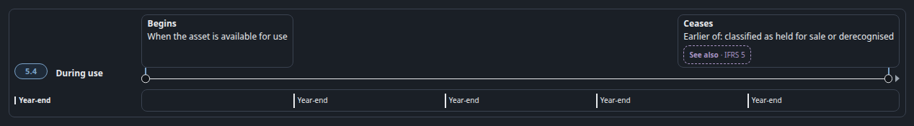
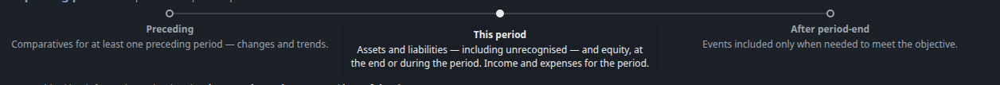
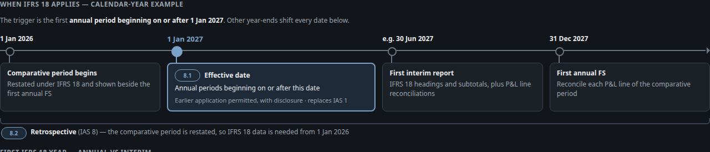

S4 · Timeline: one shared component (kit 25)
Rules 5 and 6 — every marker joined to its label, one note for what happens between markers, same markup on all 7 maps.
Before · live todayIAS 16 ch05 §5.4 .lc-head + 4 “Year-end” ticks

After · proposalkit 25 component
IAS 16 ch05 §5.4 During use — signed kit 25: rings on the axis, leaders, one span caption, no Year-end ticks
IFRS 18 ch08 §8.1–8.2 Calendar — same component, four markers; the span is the map’s own §8.2 line
Drawn with tokens only. Card bodies are shortened to their titles for size; on the map every line stays as it is. CF ch03 and IFRS 18 ch01 get the same component with an empty span until Johnny supplies between-words.
Before · live todayCF ch03 §3.2 .re-axis — labels under rings, no leader

Before · live todayIFRS 18 ch08 ol.tr-tl — dates above, cards below, the only span
